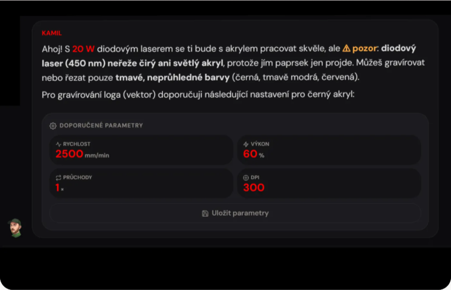
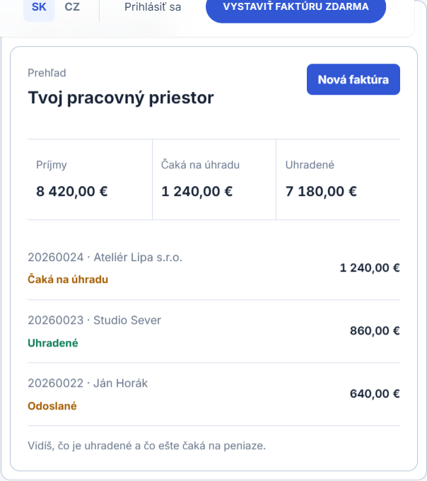
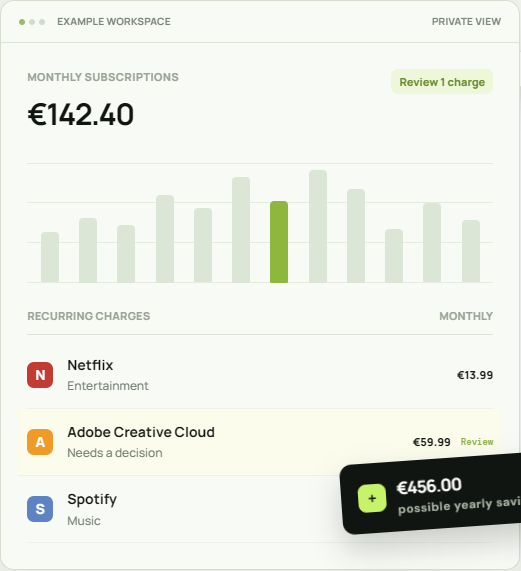

otevřít ↗Lasero
AI pracovní prostor pro laserové gravírování. Produkt, AI workflow i uživatelské rozhraní.
AI produktový design / vývoj
Navrhuji a stavím digitální produkty od prvního systému po poslední detail.
02 / Práce
Ne portfolio dekorací. Pracovní stůl s věcmi, které jsem opravdu navrhl a postavil.

otevřít ↗AI pracovní prostor pro laserové gravírování. Produkt, AI workflow i uživatelské rozhraní.

otevřít ↗Fakturace pro malé firmy v Česku a na Slovensku. Produktový design a kompletní responzivní aplikace.

otevřít ↗Soukromý přehled opakovaných plateb bez připojení banky. Od prvního konceptu po funkční produkt.
03 / O mně
AI Product Designer & Builder — strategie, UI a kód.
Pracuji napříč produktem: od pojmenování problému přes strukturu a rozhraní až po funkční řešení. Tyhle tři produkty jsou zatím nejpřesnější záznam toho, jak přemýšlím a pracuji.